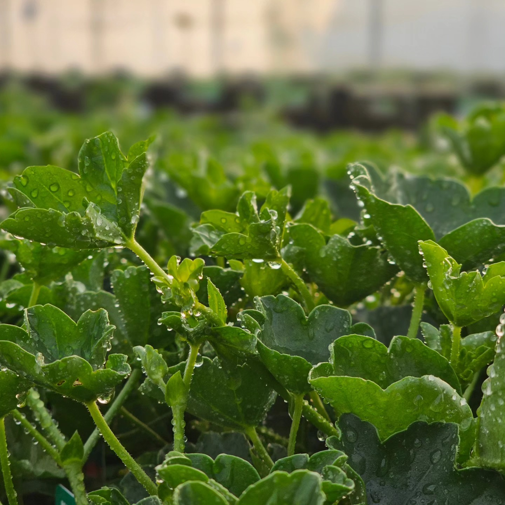

Insekticidy
Přípravky určené proti škodlivému hmyzu a dalším živočišným škůdcům.
Nabízíme postřiky a přípravky na ochranu rostlin pro zahradu, sad i skleník. V sortimentu najdete přípravky proti hmyzu, houbovým chorobám, plevelům i přírodní látky pro šetrnou ochranu rostlin.

Nabízíme přípravky pro ochranu rostlin proti škůdcům, chorobám i nežádoucímu plevelu. Vybrat si můžete klasické i šetrnější varianty podle konkrétního použití.

Přípravky určené proti škodlivému hmyzu a dalším živočišným škůdcům.

Přípravky proti houbovým chorobám a dalším běžným problémům rostlin.

Přípravky proti plevelům pro udržení čistých záhonů, cest a pěstebních ploch.

Šetrnější řešení pro podporu zdraví rostlin a omezení výskytu škůdců a chorob.
Pro snadnější výběr nabízíme i hotové sety pro konkrétní druhy rostlin a plodin.